МИНИСТЕРСТВО ТРАНСПОРТНОГО СТРОИТЕЛЬСТВА СССР
ВЕДОМСТВЕННЫЕ
СТРОИТЕЛЬНЫЕ НОРМЫ
ТЕХНОЛОГИЧЕСКИЕ
ПРАВИЛА
ИЗГОТОВЛЕНИЯ ЦЕНТРИФУГИРОВАННЫХ СТОЕК ОПОР
КОНТАКТНОЙ СЕТИ, ЛИНИЙ СВЯЗИ И АВТОБЛОКИРОВКИ
ВСН-1-90
Минтрансстрой
Москва 1990
Разработаны Всесоюзным ордена Октябрьской Революции научно-исследовательским институтом транспортного строительства (ЦНИИС) Министерства транспортного строительства СССР и СКБ Главного координационно-технологического управления строительной индустрии (ГКТУСИ) Министерства транспортного строительства, Е.А. Антоновым (руководитель темы), канд. техн. наук Н.В. Смирновым (ЦНИИС), кандидатами техн. наук О.Б. Морштейном, В.В. Фридманом, инженерами О.А. Кучеровским, Е.И. Цимбаргом (СКБ ГКТУСИ).
Внесены Министерством транспортного строительства и СКБ Главного координационно-технологического управления строительной индустрии.
Подготовлены к утверждению отделом технического нормирования качества и АСУ ГНТУ Минтрансстроя
|
Министерство транспортного строительства СССР |
Ведомственные строительные нормы |
ВСН-1-90 |
|
Технологические правила изготовления центрифугированных стоек опор контактной сети, линий связи и автоблокировки |
Взамен |
Настоящие нормы распространяются на технологию производства железобетонных предварительно напряженных центрифугированных стоек опор контактной сети (ГОСТ 19330-81 с изменением № 1), высоковольтно-сигнальных линий автоблокировки и воздушных линий связи (ГОСТ 22131-86), светофоров и опор освещения пассажирских платформ (технические условия), применяемых при строительстве, реконструкции и капитальном ремонте на сети железных дорог общего пользования и промышленных предприятий.
Нормы устанавливают способы и средства выполнения технологических операций и регламентируют основные этапы технологического процесса изготовления стоек опор в разъемных формах на роликовых центрифугах.
1.1. Центрифугированные стойки изготавливают на технологических линиях по поточно-агрегатной схеме с применением двухроликовых центрифуг, металлических форм с оголовками, механических мотовил для навивки проволочных пакетов, натяжных стендов с гидродомкратами, бетонораздатчиков и другого технологического оборудования, разработанного СКБ Главстройиндустрии Минтрансстроя СССР.
|
Внесены ЦНИИСом и СКБ ГК ТУСИ |
Утверждены
приказом ГНТУ |
Срок введения в действие "1" января 1991 г. |
1.2. Формы должны изготавливаться в соответствии с ГОСТ 25781-83* и ГОСТ 18104-81; их применение должно обеспечивать получение изделий с размерами и допусками, установленными ГОСТ 19330-81 с изменением № 1, ГОСТ 22131-86 и технической документацией, утвержденной в установленном порядке.
Каждая форма до начала эксплуатации должна быть принята ОТК завода ЖБК и пронумерована с занесением результатов проверки в журнал; размеры собранных форм могут иметь следующие отклонения от проектных, мм:
±5 - по длине;
±1 - по внутреннему диаметру*;
±1 - по эллиптичности поверхностей катания бандажей.
* Допускается замерять полуформы после их разболчивания и разъема.
Выступы на поверхностях катания бандажей и перепады по высоте в стыках не должны превышать 0,2 мм.
Не допускается наличие заусенцев, закраин и эллиптичности кромок формующей поверхности по стыкам полуформ. Заусенцы, закраины и эллиптичность кромок должны быть устранены при помощи шлифовальной машинки или другими способами до начала эксплуатации формы.
Не реже чем через 50 циклов формы должны проходить проверку прямолинейности и балансировки на специальном стенде в соответствии с обязательным приложением 1. Результаты систематических проверок каждой формы должны быть занесены в журнал.
Уплотнительные резиновые прокладки или лабиринтное уплотнение по стыку полуформ должны исключать возможность потерь цементного раствора при центрифугировании.
1.3. Центрифуга для изготовления стоек опор контактной сети включает в себя раму с неподвижными опорами; подпружиненные ("плавающие") опоры с ведущими и ведомыми катками, установленные на направляющих неподвижных опор; электродвигатель с клиноременной передачей и карданным валом; ограждающие устройства, закрываемые при установке формы на катки, и систему управления.
Центрифуга должна обеспечивать вращение формы стойки опоры контактной сети со скоростью, об/мин:
до 110 - при распределении бетонной смеси;
340 - 400 - при уплотнении бетонной смеси.
1.4. Центрифуга для изготовления стоек опор линий связи и автоблокировки состоит из рамы, неподвижных опор с ведущими и ведомыми катками, электрического привода и системы управления.
Центрифуга должна обеспечивать вращение формы стойки опоры линий связи и автоблокировки со скоростью, об/мин:
до 150 - при распределении бетонной смеси;
до 450 - при уплотнении бетонной смеси.
1.5. Монтаж, обслуживание и ремонт центрифуг следует производить в соответствии с инструкциями по эксплуатации.
1.6. Натяжной стенд сборки арматурного каркаса и формы стойки состоит из железобетонного фундамента с закладными стальными балками; неподвижного упора с гидродомкратом и захватом вершинного оголовка; переставляемого упора с захватом комлевого оголовка, обеспечивающего изготовление стоек разной длины; роликовых опор для укладки полуформы и пути перемещения бетонораздатчика.
1.7. Натяжной стенд должен быть укомплектован полубандажными кантователями или оборудован подъемными роликовыми опорами для заведения нижней полуформы под натянутый арматурный каркас.
Допускается применение вращающихся захватов оголовков для обеспечения механизированной навивки спиральной арматуры и заведения нижней полуформы под натянутый арматурный каркас.
1.8. Оголовки форм рекомендуется оборудовать амортизирующими кольцами, обеспечивающими плавную передачу усилия натяжения арматуры на бетон при распалубке, возможность свободной обрезки концов проволочных пакетов и хорошее качество бетона торцов стоек. Принципиальная конструкция амортизирующих колец дана в рекомендуемом приложении 2. При отсутствии амортизирующих колец для обеспечения качества торцов и обрезки арматуры могут быть использованы закладные (или приваренные к оголовкам) фланцевые кольца с прорезными пазами в сочетании с устройством кольцевых площадок на оголовках и закладной резиной.
На кольцевых выступах комлевых оголовков не должно быть повреждений и вмятин. При передаче усилия натяжения арматуры на форму кольцевые выступы оголовка по всему периметру должны входить в соответствующие расточки на торцовых фланцах форм, обеспечивая центровку оголовка в форме.
1.9. Объем бункера самоходного бетонораздатчика должен быть достаточным для изготовления одной самой тяжелой стойки из числа производимых на технологической линии.
1.10. Все транспортные операции с полуформами следует выполнять с применением специальной траверсы.
2.1. В качестве вяжущего следует применять:
портландцемент ПЦ 500-ДО-Н или ПЦ 500-Д5-Н, изготовленный на основе клинкера нормированного состава с содержанием трехкальциевого алюмината не более 8 % по массе и отвечающий ГОСТ 10178-85;
портландцемент для производства асбоцементных изделий, отвечающий ГОСТ 9835-77;
портландцемент ПЦ 550-ДО, ПЦ 600-ДО, ПЦ 550-Д5 или ПЦ 600-Д5 с содержанием трехкальциевого алюмината не более 8 % для изготовления стоек из бетона класса В-45 и выше;
сульфатостойкий портландцемент по ГОСТ 22266-76* или сульфатостойкий портландцемент с минеральными добавками (не более 5 %) для изготовления стоек, предназначенных для работы в условиях сульфатной агрессии.
Допускается применять портландцемент, содержащий в качестве минеральной добавки до 20 % доменного гранулированного шлака, не более 8 % трехкальциевого алюмината и отвечающий ГОСТ 10178-85.
Нормальная густота цементного теста должна быть не более 28 %. Не допускается применять цементы с началом схватывания менее 45 мин или с ложным схватыванием.
2.2. Марка цемента и его расход (в расчете на конечный состав бетона) должны соответствовать указанным в таблице.
|
Класс бетона по прочности |
Марка цемента, не ниже |
Расход цемента, не более, кг/м3 |
|
В30 |
400 |
425 |
|
В40 |
500 |
450 |
|
В45 |
500 - 550 |
500 |
Для изготовления стоек из бетона проектного класса В-45 расход цемента марки 500 должен быть не менее 425 кг, цемента марки 550 - не менее 400 кг, а цемента марки 600 - не менее 375 кг на 1 м3 исходной бетонной смеси.
Во всех случаях расход цемента должен быть не менее 300 кг на 1 м3 бетона конечного состава (после центрифугирования).
2.3. Применяемые портландцементы должны соответствовать I и II группам эффективности при пропаривании (ГОСТ 26633-85 и ГОСТ 22236-85).
2.4. В качестве крупного заполнителя необходимо применять щебень, полученный дроблением прочных горных пород или щебень из гравия, удовлетворяющий требованиям ГОСТ 8267-82, ГОСТ 10260-82 и ГОСТ 10268-80 с дополнением № 1. Максимальная крупность зерен - 20 (25) мм.
2.5. В качестве мелкого заполнителя должен применяться песок, удовлетворяющий требованиям ГОСТ 8736-85 и ГОСТ 10268-80 с дополнением № 1.
Модуль крупности песка должен быть не менее 2,0. Применение песка с модулем крупности 1,5 - 2,0 допускается при отсутствии среднего или крупного песка, подтверждений возможности получения в конструкции бетона заданной прочности с допустимым расходом цемента и соответствующем технико-экономическом обосновании.
Природный мелкий и очень мелкий (с модулем крупности менее 1,5) песок может быть применен в смеси с дробленым песком или с песком из отсевов дробления с доведением зернового состава смешанного песка до пределов, установленных ГОСТ 10268-80 с дополнением № 1.
2.6. Рекомендуется дополнительно обогащать крупные и мелкие (или только крупные) заполнители непосредственно перед подачей в расходные бункера бетоносмесителя.
Дополнительное обогащение заполнителей (рассев на фракции щебня с отбором фракций мельче 5 мм и отсев от песка гравелистых фракций крупнее 5 мм) может быть организовано с промывкой или без промывки - с рассевом заполнителей естественной влажности.
Дополнительное обогащение заполнителей следует производить с помощью обогатительной установки или отдельного грохота на технологической линии подачи заполнителей со склада на бетоносмесительный узел без промежуточных складских операций.
2.7. В бетонную смесь при ее приготовлении следует вводить химические добавки с целью повышения прочности и морозостойкости батона, а также для снижения расхода цемента и регулирования подвижности бетонной смеси.
В качестве суперпластификаторов следует применять разжижитель С-3 (ТУ 6-14-626-80 с изменениями №№ 1, 2) в количестве 0,3 - 0,7 % от массы цемента или предварительно приготовленную комплексную добавку С-3 + ЩСПК (по рекомендациям ЦНИИС и СКБ ГКТУ-стройиндустрии). В качестве пластификаторов применяют лигносульфонаты технические ЛСТ (ОСТ 13-183-83) или ЛСТМ-2 (ОСТ 13-287-85) в количестве 0,05 - 0,20 % от массы цемента.
В качестве воздухововлекающих добавок следует применять смолу нейтрализованную воздухововлекающую СНВ, СНВК (ТУ 81-05-75-74*) в количестве до 0,01 % от массы цемента, смолу древесную омыленную СДО (ТУ 13-05-02-83) в количестве 0,01 - 0,08 %, клей талловый пековый (ОСТ 13-145-82) в количестве 0,005 - 0,01 % от массы цемента.
В качестве пластифицирующе-воздухововлекающей добавки применяют щелочной сток производства капролактама ЩСПК (А) по ТУ 113-03-488-84 в количестве 0,15 - 0,4 % от массы цемента.
Обязательно применение воздухововлекающих или пластифицирующе-воздухововлекающих добавок при изготовлении стоек из бетона с проектной маркой по морозостойкости 200 и выше.
2.8. Применение для приготовления бетонной смеси материалов (вяжущих, заполнителей и добавок), отличающихся от указанных выше, допускается после проведения дополнительных исследований по согласованию с ЦНИИСом, Гипропромтрансстроем, Главком или производственным объединением-изготовителем. В этих случаях должно быть гарантировано соответствие свойств центрифугированного бетона требованиям СНиП 2.03.01-84, расчетным и нормативным характеристикам, а также требованиям по долговечности, коррозионной стойкости и защитным свойствам по отношению к арматуре.
2.9. Вода для приготовления бетонной смеси и вода, добавляемая в систему оборотного водоснабжения при промывке заполнителей перед подачей их в бетоносмеситель, должна удовлетворять требованиям ГОСТ 23732-79.
3.1. Арматурные работы следует выполнять в соответствии с требованиями ГОСТ 10922-75.
3.2. Проволочные пакеты продольной арматуры из высокопрочной проволоки изготовляют путем непрерывной навивки двухпетлевых пучков на механическом мотовиле. Количество проволок (струн) в каждом двухпетлевом пучке и схемы навивки проволочного пакета приведены на рабочих чертежах стоек.
При навивке пакета проволоку с бухтодержателя пропускают через тормозное устройство, чем достигается равная длина проволок в пакете. Не допускается навивать пакеты при неисправности или отсутствии тормозного устройства.
3.3. При навивке пакета проволоку укладывают на пальцах упоров мотовила в один ряд (виток к витку), а пучки пакета перевязывают вязальной проволокой последовательно друг за другом на расстоянии не более 300 мм от пальцев упоров.
Концы высокопрочной проволоки в пакете или концы проволоки между бухтами при навивке пакета стыкуют внахлестку с обмоткой стыка проволокой диаметром 1 мм по ГОСТ 3282-74. Обмотку стыка следует производить при помощи механического (электрического или пневматического) стыкователя. Допускается производить обмотку стыка с помощью ключа (рекомендуемое приложение 3).
Запрещается стыковать концы высокопрочной проволоки завязыванием узлом.
3.4. Стыкование концов высокопрочной проволоки навиваемого пакета производят в следующем порядке:
в штырь с прорезью укладывают конец высокопрочной проволоки, закрепляют винтом-барашком и начинают навивку пакета;
по окончании навивки балку мотовила останавливают в таком положении, чтобы проволока последнего витка касалась проволоки первого витка;
в натянутом состоянии на обе стыкуемые проволоки одновременно наносят метку (краской или другим способом), в этом положении на балке мотовила закрепляют проволоку последнего витка и перерубают натянутый конец;
перемещением подвижного упора балки мотовила ослабляют навитый пакет и освобождают стыкуемые концы проволоки;
оттягивают стыкуемые концы проволоки, совмещают их до совпадения меток, после чего производят обмотку стыка.
3.5. Обмотку стыка механическим стыкователем производят в соответствии с приложенной к нему заводской инструкцией.
При обмотке стыка с помощью ключа конец обмоточной проволоки, заранее заготовленной в виде отрезка спирали необходимой длины, заправляют через два отверстия в ключе и заводят между стыкуемыми проволоками. Вращая ключ, производят обмотку с укладкой обмоточной проволоки вплотную (виток к витку).
Длина обмотки стыка концов высокопрочной проволоки диаметром 4 мм должна быть не менее 125 мм при обмотке стыкователем и не менее 175 мм при обмотке с помощью ключа; при стыковании высокопрочной проволоки диаметром 5 мм длина обмотки стыка должна быть соответственно не менее 150 и 200 мм.
3.6. Допускается вместо обмотки проволокой соединять концы высокопрочной проволоки металлическими скрепками или скобами при условии обеспечения равнопрочности стыка цельной проволоке.
3.7. Готовый проволочный пакет на балке мотовила перевязывают в нескольких местах вязальной проволокой, снимают с пальцев упоров, укладывают в контейнер и транспортируют к натяжному стенду.
Изготовлять, хранить и транспортировать проволочные пакеты необходимо в условиях, предохраняющих их от коррозии, загрязнения и механических повреждений.
3.8. Для сокращения потерь высокопрочной проволоки из-за обрывов при натяжении на стенде, упрощения навивки, транспортирования и навески на оголовки стенда проволочные пакеты рекомендуется разделить на восемь (или на четыре - для опор связи и автоблокировки) отдельных двухпетлевых пучков с самостоятельным стыкованием концов проволоки в каждом пучке. При этом должно быть сохранено проектное количество проволок во всем пакете. В случае обрыва одного из пучков при натяжении заменяют только оборванный пучок.
3.9. Поверхность ненапрягаемой стержневой арматуры должна быть очищена от окалины и ржавчины (отпадающей при ударе молотком), остатков технологической смазки, грязи и т.п.
Арматурные стержни должны быть ровными, без местных искривлений. Общее отклонение оси стержня от прямой не должно превышать 1/100 его длины. Править и чистить ненапрягаемую арматуру, поставляемую в бухтах, следует на правильно-отрезных станках.
3.10. Заготовку для усиливающих и монтажных колец изготовляют на станке для гнутья арматуры, устанавливая на него сменные барабаны, диаметр которых соответствует проектным диаметрам колец. После намотки на барабане арматурной спирали по ней мелом или краской проводят вертикальную линию, отмечая место разрезки и стыкования колец; намотанную спираль-заготовку снимают с барабана и разрезают по меткам; концы арматуры соединяют встык и сваривают (усиливающие кольца - с накладкой коротыша арматуры).
3.11. Отклонения колец (после сварки стыка) от проектного размера по диаметру, эллиптичности диаметра или местному искажению очертания не должны превышать ±2 мм. При необходимости кольца после сварки рихтуют.
3.12. Провод заземления изготовляют в шаблоне сварной из предварительно заготовленных элементов. До укладки провода заземления в арматурный каркас отверстия в гайках планок для защиты резьбы от попадания бетона заполняют петролатумом или другим аналогичным материалом.
4.1. При ручной навивке спиральной арматуры перед навеской проволочного пакета на малый оголовок, закрепленный на натяжном стенде, надевают бухту спиральной арматуры и усиливающие кольца (если они предусмотрены проектом стойки). Оголовки с коромыслами натяжного стенда разворачивают так, чтобы серьги большого (комлевого) оголовка располагались в вертикальной, а серьги малого (вершинного) оголовка - в горизонтальной плоскости.
Навеску пакета и разворот оголовков следует производить таким образом, чтобы после натяжения арматуры оси двух противоположных колков обоих оголовков располагались точно в плоскости разъема полуформ.
4.2. Навеску петель пучков проволочного пакета следует начинать с большого оголовка. Для этого верхний пучок проволочного пакета надевают на верхний колок без переворачивания петли. Второй пучок надевают на следующий колок и т.д. Пучки можно надевать на колки, постепенно поворачивая оголовок или без его поворота. В обоих случаях необходимо соблюдать общую последовательность навески пучков. Чтобы петли не спадали с колков, в промежутках между колками их рекомендуется перевязывать между собой вязальной проволокой.
На колки малого оголовка петли пучков надевают в том же порядке и при положении траверсы домкрата, когда надетые на оба оголовка пучки пакета свободно висят на оголовках, не касаясь опорных роликов или настила натяжного стенда. Для надевания пучков на колки малого оголовка рекомендуется использовать изготовленный из отрезка трубы рычаг. Конец рычага в форме ложки продевают в петли пучка, заводят на колок оголовка, по рычагу осаживают петли на колок, после чего рычаг снимают с колка.
После навески с пучков снимают скрутки вязальной проволоки, поставленные при изготовлении пакета.
4.3. После навески пакета на колки оголовков стенда переходные проволоки пучков на должны пересекаться между собой и пересекать другие проволоки пакета. Пересечения возникают из-за нарушения схемы навивки проволочного пакета или порядка его навески на колки оголовков. Причина появления пересечений переходных проволок должна быть устранена. Пересечения вызывают перенапряжение и изгиб переходных проволок на обрезах колков при натяжении, что может привести к обрыву пакета.
4.5. После выбора слабины по пакету сдвигают усиливающие кольца и устанавливают их в проектное положение.
После закрепления усиливающих колец проволочный пакет натягивают до усилия, на 5 % превышающего проектное, выдерживают в течение 2 мин, после чего натяжение снимают до усилия, равного 50 % проектного.
При этом натяжении внутрь проволочного пакета заводят монтажные кольца. Усиливающие и монтажные кольца привязывают к продольной арматуре вязальной проволокой в трех местах под углом в 120°. На монтажные кольца укладывают стержни продольной ненапрягаемой арматуры и заземляющий провод (если они предусмотрены проектом стойки) и привязывают их вязальной проволокой в каждом пересечении с монтажными кольцами.
4.6. Сдвигают на натянутый пакет бухту проволоки для спиральной арматуры и, закрепив конец проволоки у вершины каркаса и поворачивая бухту, укладывают спираль. Распределение проволоки вручную или с помощью намоточного устройства следует производить с проектным шагом до плотного прилегания к продольной арматуре каждого витка спирали. Не допускается нарушения прямолинейности продольной арматуры из-за утяжки ее спиральной арматурой.
4.7. Спиральную арматуру привязывают к продольной вязальной проволокой в трех местах по окружности под углом 120° через каждый виток. При отсутствии в проекте специальных указаний допускается не привязывать спиральную арматуру к продольной, ограничившись лишь привязкой ее в местах пересечений с монтажными кольцами и в зоне 1 м от обоих оголовков.
4.8. После навивки спирали вплотную к колкам оголовков на амортизирующие кольца или в зазор между колками и фланцевыми кольцами (п. 1.8) укладывают резиновые кольца, которые имеют вырезы, соответствующие расположению арматуры на колках оголовков. Во избежание повреждения закладных резиновых колец при установке нижней полуформы их укрепляют на оголовках вязальной проволокой.
После навивки и привязки спирали увеличивают натяжение продольной арматуры примерно до 90 % проектного усилия.
4.9. Под арматурный каркас (после его приемки ОТК) на опорные ролики стенда устанавливают полубандажные кантователи, на которые укладывают нижнюю полуформу. Откидными болтами полуформу соединяют с кантователями (болты подтягивают без усилий), поворачивают ее вокруг каркаса в нижние положение, кантователи освобождают от болтов и снимают с полуформы.
Если натяжной стенд оборудован подъемными опорами, то нижнюю полуформу укладывают на катки опор до навески проволочного пакета. После приемки арматурного каркаса нижнюю полуформу подводят под каркас в верхнее крайнее положение.
Запрещается заводить нижнюю полуформу под натянутый арматурный каркас без использования полубандажных кантователей, если натяжной стенд не оборудован подъемными роликовыми опорами.
4.11. Для обеспечения проектного расположения арматурного каркаса в сечениях стенок стоек и заданной величины защитного слоя бетона к каркасу должны быть прикреплены прокладки из мелкозернистого бетона (класса не ниже В30): не менее 3 шт. по периметру каждого монтажного кольца (под углом 120° друг к другу).
4.12. Для обеспечения возможности последующего извлечения из тела стоек стальных фиксаторов, используемых для установки изолирующих элементов (втулок) и для образования вентиляционных отверстий, их предварительно покрывают петролатумом, погружая на 3 - 5 с в нагретый до 65° петролатум (поочередно один и другой концы). Толщина покрытия должна составлять примерно 1 мм, что регулируется длительностью выдерживания конца фиксатора в петролатуме.
На фиксатор после извлечения его из петролатума немедленно надевают изолирующие втулки: вначале на один, а затем на второй конец. Слой петролатума после остывания удерживает втулку на фиксаторе и предохраняет фиксатор от налипания бетона.
Рекомендуется у каждого натяжного стенда иметь ящики с пронумерованными ячейками - по количеству фиксаторов на одну стойку. В этих ячейках хранится запас пронумерованных и покрытых петролатумом фиксаторов (с надетыми изолирующими втулками и без втулок) для образования вентиляционных отверстий.
Концы каждого фиксатора должны плотно входить в гнезда полуформы с выдавливанием петролатума, нанесенного на конец фиксатора; плечики устанавливаемого фиксатора и наружные кромки изолирующих втулок должны плотно касаться формующей поверхности полуформы.
4.14. Допускается образование отверстий в стенках опор с помощью металлических или резиновых пустотообразователей, стационарно устанавливаемых на полуформах. В этом случае натяжной стенд должен быть оборудован подъемными роликовыми опорами.
5.1. На момент начала центрифугирования подвижность исходной бетонной смеси, определяемая по ГОСТ 10181.1-86, должна быть в пределах 3 - 4 см осадки конуса, воздухосодержание исходной бетонной смеси, определяемое по ГОСТ 10181.3-86 должно быть 2 - 4 % (по объему).
Технологическим
показателем оптимального содержания песка ( 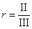
Технологический метод расчета и подбора состава бетона дан в обязательном приложении 4.
5.4. При изготовлении стоек должно отделяться не менее 20 л шлама (в расчете на 1 м3 проектного объема бетона стойки). При отсутствии или недостаточном количестве отделившегося шлама необходимо немедленно принять меры по нормализации технологического процесса.
6.1. Бетонную смесь приготовляют в циклических бетоносмесителях принудительного действия в соответствии с требованиями ГОСТ 7473-85. Рекомендуется приготавливать бетонную смесь в гравитационных смесителях. Дозирование компонентов в автоматическом или полуавтоматическом режиме должно производиться весовым способом. Погрешность дозирования не должна превышать пределов, установленных ГОСТ 7473-85.
6.2. Продолжительность перемешивания бетонной смеси устанавливается в соответствии с ГОСТ 7473-85 из условия обеспечения однородности смеси по всему объему замеса, достижения оптимального воздухосодержания (по п. 5.1) и зависит от типа, емкости смесителя и угловой скорости перемешивания.
6.3. Химические добавки следует вводить в виде водных растворов заданной концентрации вместе с водой затворения. Рабочий раствор необходимо дозировать по массе или объему с точностью ±2 %.
6.4. Количество заполнителей, дозируемых на замес, необходимо систематически корректировать в зависимости от их фактической влажности. Количество воды затворения (с учетом воды, вводимой с заполнителями и с растворами добавок) надо назначать из условия обеспечения заданной подвижности бетонной смеси на момент начала центрифугирования (в соответствии с п. 5.1).
Количество бетонной смеси, укладываемой в полуформу, определяют по указанному в проекте объему бетона в стойке, увеличенному на количество шлама, отходящего при центрифугировании. Это увеличение составляет в среднем 4 - 5 % проектного объема и уточняется при изготовлении опытных стоек при подборе состава бетона, а также при изменении качества материалов (цемента и заполнителей) замером количества шлама, отошедшего при центрифугировании, и толщины стенки стойки.
В бункер бетонораздатчика необходимо загружать количество бетонной смеси, требующееся для изготовления только одной стойки.
Общая продолжительность цикла от момента приготовления первого замеса бетонной смеси, идущего на изготовление стойки, до начала центрифугирования не должна превышать срока начала схватывания цемента, определенного по ГОСТ 310.3-76.
6.6. Бетонную смесь укладывают в нижнюю полуформу при помощи передвижного бетонораздатчика. Для предотвращения потерь бетонной смеси и облегчения последующей очистки стыковых участков полуформы на нее с двух сторон по всей длине следует устанавливать инвентарные съемные доски-щитки с металлическими планками, входящими в просвет между арматурой и полуформой, или укладывать, полосы из транспортерной ленты.
6.7. Необходимым условием получения стоек со стенками проектной толщины и однородным бетоном по толщине стенки является распределение по длине полуформы строго определенного количества бетонной смеси, соответствующего проектному объему бетона в каждом сечении (с учетом п. 6.5).
Бетонную смесь раскладывают со следующим примерным распределением ее по длине полуформы:
на участке первых 1,5 - 2 м от вершины - до уровня верха арматурного каркаса (без выступов за пределы каркаса);
на участке 1,5 - 2 м от комля - на высоту полуформы;
остальную часть полуформы заполняют по прямой, соединяющей поверхности бетонной смеси, уложенной в концевых участках полуформы.
В полуформы стоек опор линий связи, автоблокировки и других стоек малого диаметра бетонную смесь в вершине укладывают со штыкованием.
Для каждого типа стоек (в зависимости от размеров и толщины стенки) должна быть определена расчетная эпюра распределения бетонной смеси в полуформе, которую следует помещать в технологических картах.
6.9. После распределения бетонной смеси по длине полуформы и в каждом сечении снимают металлические щитки (или полосы), очищают стыковые поверхности нижней полуформы и одновременно с обеих сторон проверяют положение фиксаторов и изолирующих втулок (п. 4.13).
6.10. После очистки от остатков бетонной смеси поверхностей стыковых участков нижней полуформы на нее опускают верхнюю полуформу.
При укладке полуформы должна быть исключена возможность обрушения бетонной смеси на стыковые поверхности нижней полуформы. В случае обрушения смеси верхняя полуформа должна быть поднята, а стыковые поверхности нижней полуформы - вновь очищены.
После проверки чистоты стыков производят сболчивание формы. Для сболчивания и разболчивания следует применять реверсивные гайковерты. В сболченной форме зазоры в стыках полубандажей по поверхности катания не должны превышать 1,0 мм.
При передаче усилия натяжения:
упорные винты доводят до соприкосновения с фланцем вершинного (подвижного) оголовка; выключают натяжной домкрат, снимая усилие натяжения, в результате чего происходит обжатие формы с устранением зазора между фланцами формы и комлевого оголовка;
натяжение снова доводят до усилия, превышающего проектное на 2 - 3 %; одновременно с двух сторон по диагонали ключами затягивают упорные винты с моментом (25 - 30) кг×см, проверяют отсутствие зазора между фланцем формы и фланцем комлевого оголовка, после чего натяжной домкрат выключают и усилие полностью передают на форму; при наличии зазора между формой и фланцем комлевого оголовка (при натяжении до 1,02 - 1,03 проектного) эту операцию повторяют;
извлекают пальцы, соединяющие оголовки с коромыслами натяжного стенда, траверсу домкрата и коромысло вершинного упора подают к упорам стенда, освобождая форму.
7.1. Сболченную форму подают краном на центрифугу и проверяют соответствие ограждающих устройств рабочему положению.
7.2. Геометрическая ось формы, уложенной на центрифугу, должна совпадать с фактической "осью вращения" формы: находиться в вертикальной плоскости, проходящей посередине между ведущими и ведомыми роликами всех рам. При смещении оси формы бетонная смесь укладывается неравномерно, в результате чего стенки стоек в одном сечении получаются разной толщины. Положение форм на центрифуге должно быть выверено при настройке центрифуги; его необходимо регулярно контролировать в процессе эксплуатации. Неравномерность прилегания бандажей к роликам вызывает удары и хаотические колебания формы, ускоренный износ оборудования и способствует созданию высокого уровня шума.
7.3. Для сбора и предотвращения разбрызгивания шлама при центрифугировании на комлевой конец формы, лежащей на центрифуге, должен быть установлен шламосборник.
7.5. Продолжительность вращения на первой скорости определяют по прекращению пересыпания бетонной смеси во внутренней полости формы; после прекращения пересыпания смеси, но не ранее чем через 1 мин после включения, электропривод переключают на вторую скорость, через 0,5 мин - на третью и еще через 0,5 мин - на четвертую (или плавно поднимают скорость до максимальной).
Не допускается формовать стойки на промежуточных скоростях.
7.7. Минимальная продолжительность вращения формы на четвертой скорости (7 мин) может быть установлена с учетом п. 7.6. при соблюдении следующих обязательных условий:
использовании форм, отвечающих требованиям "Правил проверки конических форм на стенде" (см. приложение 1) по статической балансировке, прямолинейности, эллиптичности и износу кругов катания бандажей;
экспериментального подтверждения на каждом предприятии ЖБК, что прочность центрифугированного бетона в стойках опор, изготовленных на конкретном технологическом оборудовании из бетонной смеси на данных материалах (цементе, заполнителях и добавках), при уплотнении на высшей скорости в течение 7 мин не ниже прочности бетона при более длительном уплотнении.
7.8. При нормальной работе центрифуги форма вращается плавно, без резких ударов, крупный заполнитель укладывается плотным скелетом и формируется однородная структура бетона.
Удары и хаотические колебания формы с амплитудой более 3 мм во время вращения могут быть вызваны:
нарушением балансировки или недопустимым износом формы;
искривлением нижней полуформы при загрузке ее бетонной смесью из-за нарушения положения опорных роликов натяжного стенда (п. 4.10); искривление сохраняется и при последующем сболчивании формы;
смещением комлевого оголовка из-за неисправности кольцевого выступа на оголовке и кольцевой расточки на фланце формы;
искривлением формы несимметричным обжатием преднапряженной арматурой из-за нарушения правил стыкования высокопрочной проволоки при намотке пакета (п. 4.4) или из-за резкого различия в усилиях затяжки упорных винтов (п. 6.12);
нарушением положения ведущих и ведомых роликов центрифуги (п. 7.2).
При возникновении ударов и колебаний формы причины их должны быть немедленно выявлены и устранены, так как они вызывают разуплотнение бетона в стойке, появление продольных щелей в стенках стоек вдоль напрягаемой арматуры и обвалы бетона после окончания центрифугирования.
7.9. В процессе центрифугирования не должно происходить потерь цементного раствора через стыки полуформ по длине стойки. Форма, при вращении которой происходит потеря цементного раствора из стыков, должна быть изъята из оборота и отремонтирована.
Не допускается оставлять шлам во внутренней полости стойки после центрифугирования, так как он после затвердевания создает путь капиллярного подсоса воды и способствует разрушению бетона стойки.
7.11. После слива шлама и осмотра поверхности бетона внутренней полости форму со свежеотформованной стойкой подают на термообработку.
7.12. При транспортных операциях с формой необходимо обеспечивать плавность ее подъема и опускания, не допуская толчков и ударов, вызывающих появление трещин и обвалов в свежеотформованном бетоне.
8.1. Для ускорения твердения бетона термообработка центрифугированных стоек может быть осуществлена:
пропариванием в паровоздушной среде безнапорных пропарочных камер, в том числе и ямного типа;
прогревом в индукционных камерах;
прогревом в сухой воздушной среде тепловых камер, в том числе в среде отходящих газов.
8.2. Не рекомендуется производить термообработку бетона пуском пара во внутреннюю полость стоек.
Необходимую влажность паровоздушной среды в период подъема температуры и изотермического прогрева обеспечивают за счет влажности подаваемого пара и герметичности гидравлических затворов пропарочных камер.
8.5. Для обеспечения равных тепловлажностных условий по всему объему камеру рекомендуется оборудовать насосами-кондиционерами.
8.7. В случае, когда в пропарочную камеру подают формы, по концам которых также установлены герметизирующие заглушки, влажность паровоздушной среды в пропарочной камере на всех этапах пропаривания не регламентируется.
При установлении режима термообработки должны быть соблюдены следующие параметры:
скорость подъема температуры бетона при любом способе термообработки не должна превышать 20 °С в час;
изотермический прогрев должен производиться при температуре бетона не выше 80 °С;
скорость снижения температуры бетона в форме (до распалубки) после окончания периода изотермического прогрева не должна превышать 10 °С в час.
8.9. Снижение температуры бетона стоек в формах после пропаривания может быть осуществлено:
интенсивным принудительным охлаждением за счет подачи в камеру воды через систему орошения;
естественным остыванием в камере при закрытых крынках до температуры, превышающей температуру окружающего воздуха не более чем на 35 °С с последующим остыванием в камере при снятых крышках или на площадке распалубки;
принудительной вентиляцией внутреннего объема камеры при условии установки герметизирующих заглушек по концам форм (п. 8.6).
8.10. Снижение температуры бетона после прогрева в индукционной камере или в сухой воздушной тепловой камере может быть осуществлено принудительной вентиляцией внутреннего объема камеры или естественным остыванием в камере при закрытых крышках, а затем при открытых крышках или на площадке распалубки (до снятия полуформ).
8.12. Температуру и длительность периода изотермического прогрева устанавливают с учетом последующего набора бетоном прочности при остывании (до момента передачи усилия натяжения арматуры). Длительность периода изотермического прогрева устанавливают в зависимости от принятого уровня (температуры) прогрева, особенностей применяемого цемента (эффективности при пропаривании) и поверхностно-активных добавок, качества заполнителей и требуемой передаточной прочности (на основании испытаний контрольных центрифугированных бетонных образцов).
8.13. Термообработка может вызвать ухудшение качества бетона в стойках, в связи с чем температура и длительность периода изотермического прогрева должны быть установлены минимально необходимыми для конкретных условий организации технологического процесса производства и особенностей используемых материалов. В каждом случае должна быть рассмотрена возможность снижения уровня и сокращения длительности периода изотермического прогрева до 2 - 4 ч при одновременном увеличении длительности остывания стоек в камерах (без принудительного охлаждения).
9.1. После термообработки формы со стойками из камеры переносят на площадку для распалубки краном. Площадка должна быть оборудована металлическими обрезиненными или деревянными подкладками для опирания на них бандажей форм.
Упорные винты при передаче натяжения на бетон следует вывинчивать поочередно на пол-оборота, повторяя эту операцию несколько раз до полной передачи усилия натяжения арматуры на бетон стойки. Не допускается вывинчивание или отставание одного (или двух) из упорных винтов более чем на пол-оборота по сравнению с остальными.
9.3. Распалубку стоек производят в следующем порядке:
разболчивают форму;
снимают при помощи крана верхнюю полуформу;
нижнюю полуформу захватывают двумя крюками траверсы и поворачивают вокруг продольной оси на 180°;
снимают нижнюю полуформу;
стойку (краном при помощи траверсы) передают на площадку для обрезки арматуры, устройства заглушек и установки закладных деталей.
9.4. Во избежание деформаций и повреждений форм при распалубке должны соблюдаться правила строповки, исключающие перекосы полуформ при снятии их со стоек и транспортных операциях.
9.5. Площадка для обрезки арматуры и выполнения других завершающих операций по изготовлению стоек должна быть оборудована обрезиненными подкладками, располагаемыми на удобной для производства работ высоте.
9.6. Перенесенную на площадку стойку укладывают на подкладки и специальной выколоткой выбивают фиксаторы. Запрещается выбивать фиксаторы нанесением ударов непосредственно по торцам фиксаторов.
9.7. Для отделения оголовков снимают закладные резиновые кольца и через зазор между телом бетона стойки и торцами колков оголовков дисковой пилой, электродуговой сваркой или газовой резкой обрезают концы проволочных пакетов.
9.8. После обрезки концов проволочных пакетов от торцов стоек отделяют вершинный и комлевой оголовки. Снятые оголовки должны быть тщательно очищены от бетона и остатков арматурных петель; рабочие поверхности колков оголовков должны быть смазаны смесью машинного масла и петролатума; должно быть также проверено состояние амортизирующих (или фланцевых) колец с очисткой их от остатков бетона.
9.9. У стоек со сборными или монолитными заглушками после снятия оголовков концы арматурных проволок вторично обрезают таким образом, чтобы оставались концы, выступающие над поверхностью бетона торцов на 8 - 10 мм. У стоек без заглушек в комлевой части концы арматурных проволок обрезают заподлицо с бетоном торцов стойки.
9.10. После снятия оголовков и обрезки концов арматурных проволок каждая стойка должна быть освидетельствована представителем ОТК. Результаты освидетельствования стойки должны быть занесены в журнал.
9.11. В соответствии с требованиями, установленными ГОСТ 19330-81, ГОСТ 22131-86, техническими условиями или проектом на поверхности стойки должна быть нанесена маркировка.
Если стойка выбракована, то вместо маркировки на ней должна быть сделана несмываемой краской надпись "брак".
10.1. Бетонные заглушки по концам стоек могут быть как сборными (с установкой и омоноличиванием заранее изготовленных элементов), так и монолитными (с укладкой бетонной смеси непосредственно во внутренние полости стоек). Необходимость устройства заглушек устанавливается проектом.
10.2. Сборные заглушки следует изготавливать в цельнометаллических групповых или кассетных формах с виброуплотнением бетонной смеси. Для ускорения твердения бетона заглушки с формами помещают в камеры вместе со стойками и подвергают термообработке.
10.3. Омоноличивание сборных заглушек по концам стоек производят в следующем порядке:
приготовляют цементно-песчаный раствор состава 1:4 с подвижностью 4 - 5 см погружения конуса;
на омоноличиваемые поверхности стойки и заглушки мастерком наносят слой раствора толщиной 2 - 3 см;
на конец стойки свободно навешивают металлическую или изготовленную из транспортерной ленты стяжную манжету;
устанавливают заглушку в полость опоры и стягивают манжету;
ударами массивного деревянного молотка заглушку равномерно осаживают до упора, сваривают выпуски арматуры стойки и заглушки и окончательно затягивают манжету;
через контрольные отверстия в манжете убеждаются в полноте заполнения раствором зазора между фланцем заглушки и торцом стойки и (при необходимости) с помощью металлического штыря в зазор укладывают дополнительное количество раствора.
Манжету снимают после достижения цементно-песчаным раствором прочности не менее 5 МПа. Для ускорения твердения раствора омоноличивания может быть применен обогрев инфракрасными излучателями (ТЭНами); индукционный прогрев с помощью надеваемой на конец стойки катушки-соленоида, паропрогрев с помощью накладного колпака-рубашки и др.
10.4. Устройство монолитных заглушек по концам стоек производят в следующем порядке:
в соответствии с проектом стойки перед навивкой спиральной арматуры в арматурном каркасе у оголовков укрепляют проволочные кресты;
после распалубки внутрь стойки на проволочные кресты устанавливают диски из картона, толя, рубероида или других материалов для удержания бетонной смеси и образования внутренних поверхностей торцов заглушек;
на концы стойки устанавливают инвентарные металлические формы и закрепляют их;
через воронки в верхней части форм загружают бетонную смесь и уплотняют ее вибраторами, прикрепленными к днищам форм.
Металлические формы могут быть сняты со стоек после достижения бетоном заглушек прочности не менее 5 МПа. Для ускорения твердения бетона могут быть применены те же методы термообработки, что и при омоноличивании сборных заглушек.
В зимний период прочность бетона заглушек ко времени выдачи стоек из цеха должна быть не ниже 70 % проектной.
10.6. После устройства заглушек и нанесения защитного покрытия устанавливают изолирующие втулки и прокладки, детали для крепления консолей и кронштейнов, проверяют качество и производят приемку стойки, после чего ее отправляют на склад готовой продукции.
10.7. При выдаче из цеха температура бетона стоек не должна превышать температуру наружного воздуха более чем на 35 °С. В зимнее время для выполнения этого условия должны использоваться специальные остывочные помещения - шлюзы, которые обеспечивают естественное равномерное охлаждение стоек со скоростью не более 20 °С в час.
10.8. Складирование и хранение стоек, транспортные и погрузочные операции с ними должны производиться в соответствии с ГОСТ 19330-81, ГОСТ 22131-86, техническими условиями или указаниями проекта. Все погрузочно-разгрузочные и транспортные операции со стойками выполняют краном с траверсой, снабженной инвентарными захватами.
11.1. При изготовлении центрифугированных стоек должны быть обеспечены следующие виды контроля качества: входной - качества материалов для бетонных смесей, арматурных сталей и комплектующих изделий; операционный - выполнения технологических операций и приемочный контроль готовых изделий;
Входной контроль осуществляет заводская лаборатория, руководствуясь требованиями ГОСТ 24297-87*; она же проводит операционный контроль приготовления и укладки бетонной смеси, центрифугирования и термообработки стоек. Операционный контроль арматурных работ и приемку готовых стоек осуществляет ОТК завода.
11.2. Качество заполнителей для бетона контролируют по ГОСТ 8735-88 и ГОСТ 8269-87. Периодичность контроля устанавливается в соответствии с ГОСТ 8267-82 и ГОСТ 8736-85. При этом в каждой фракции щебня определяют гранулометрический состав и его стабильность, загрязненность и прочность (по дробимости), содержание зерен слабых пород и зерен пластинчатой (лещадной) и игловатой формы.
При испытаниях песка определяют гранулометрический состав, загрязненность (пылевидными и глинистыми частицами) и модуль крупности.
11.3. Качество поступающего цемента контролируют испытание отобранных от каждой партии проб с определением нормальной густоты, сроков схватывания и равномерности изменения объема по ГОСТ 310.3-76 и ГОСТ 310.4-81.
Для обеспечения возможности оперативного учета фактической активности используемого цемента и его технологических особенностей при производстве стоек опор рекомендуется каждую поступившую партию цемента испытывать непосредственно в бетоне с определением прочности центрифугированного бетона после тепловлажностной обработки и (при необходимости) корректировкой состава исходной бетонной смеси.
Группу цемента по эффективности при пропаривании определяют по ГОСТ 22236-85.
11.4. Качество химических добавок контролируют проверкой их действия на бетон с применением методов, регламентированных ГОСТ 24211-80 с изменением № 1, на основании чего дозировка каждой из добавок может быть уточнена. При отсутствии воспроизводимости основного эффекта добавки (по сравнению с бетонной смесью того же состава, но без добавки) испытанная партия добавки не допускается в производство.
11.5. Качество каждой партии горячекатанной арматурной стали классов А-III и А-I и арматурной проволоки класса Вр-I оценивают по сертификату завода-изготовителя арматурной стали. При отсутствии сертификата проволока должна быть испытана на растяжение в соответствии с ГОСТ 12004-81 с изменением № 1, на изгиб - с ГОСТ 14019-80 и перегиб - с ГОСТ 1579-80 с изменением № 1.
11.6. Высокопрочную арматурную проволоку класса Вр-II независимо от наличия сертификата завода-изготовителя следует испытывать на растяжение и изгиб. Образцы для испытания отбирают в начале и конце каждой бухты. В случае обнаружения бухты, в которой механические свойства проволоки не соответствуют требованиям государственного стандарта, бухту отбраковывают.
11.7. Входной контроль качества комплектующих изделий следует проводить в соответствии с требованиями проекта стоек и техническими условиями на комплектующие изделия.
11.8. Операционный контроль качества изготовления стоек состоит из контроля выполнения технологических операций по всему циклу производства в соответствии с технологическим регламентом, установленным настоящими ВСН, в том числе контроля качества арматурных каркасов, технологии нанесения и качества защитного покрытия (п. 10.5.).
11.9. Качество каждого арматурного каркаса контролируют на натяжном стенде.
После частичного выбора слабины провисание проволок, имеющих стык, должно быть одинаковым с остальными проволоками пакета. Большее провисание стыкованных проволок свидетельствует о нарушениях требований п. 3.4 и такой пакет должен быть исправлен: стыки должны быть распущены и обмотаны вновь с обеспечением равенства длины стыкованных проволок длине остальных проволок в пакете.
Размеры арматурного каркаса, натянутого в соответствии с п. 4.8, должны соответствовать требованиям ГОСТ 19330-81 (для стоек опор контактной сети), ГОСТ 22131-86 (для стоек опор высоковольтно-сигнальных линий и автоблокировки), техническим условиям и проектам (для стоек опор воздушных линий связи и стоек мачт светофора). Размеры арматурного каркаса могут иметь следующие отклонения от проектных, мм:
±2 - по размещению продольной арматуры в сечении;
±20 - по размещению монтажных колец;
±10 - по размещению усиливающих колец;
±2 - по прогибу продольной арматуры между монтажными кольцами (из-за утяжки спиральной арматурой);
±15 - по размещению заземляющего провода.
11.10. При изготовлении арматурного каркаса усилие натяжения арматуры измеряют по показаниям манометра натяжного стенда в соответствии с ГОСТ 22362-77 и рекомендуемым приложением 5.
Не реже чем один раз в 200 изготовленных стойках следует проводить проверку натяжения каждой высокопрочной проволоки в пакете с применением частотных или динамометрических приборов согласно ГОСТ 22362-77 и приложения 5.
Средняя величина контролируемого усилия предварительного натяжения напрягаемой арматуры должна быть не менее проектной. Величины усилия натяжения отдельных проволок в пакете не должны отличаться от проектной величины более чем на ±10 %.
11.11. При передаче усилия натяжения на форму отдел технического контроля не реже 3-х раз в смену должен проверять соблюдение требований п. 6.11 в отношении правильности осуществления всех операций.
11.12. Результаты проверки качества армирования каждой стойки отражают в журнале контроля с указанием порядкового заводского номера, марки стойки, номера формы, наличия отклонений по геометрическим размерам, проектной и фактической величины натяжения арматуры. В журнале фиксируют также все отступления, допущенные при производстве арматурных работ и их устранение.
11.13. Для обеспечения качества бетона стоек в процессе их изготовления следует осуществлять операционный контроль:
качества приготовления бетонной смеси (точности взвешивания составляющих, времени перемешивания и однородности бетонной смеси);
подвижности исходной бетонной смеси сразу после выхода из бетоносмесителя и непосредственно перед началом центрифугирования и объема вовлеченного воздуха (п. 5.1);
соответствия количества бетонной смеси, укладываемой в форму, проектному объему бетона в стойке с учетом объема отходящего шлама (п. 6.5);
распределения бетонной смеси по длине и сечениям нижней полуформы (пп. 6.7, 6.8);
длительности цикла от момента приготовления первого замеса бетонной смеси до начала центрифугирования (п. 6.5);
режима центрифугирования и соответствия длительности вращения на высшей скорости требованиям п. 7.4 - 7.7;
количества шлама, отошедшего при центрифугировании стойки (пп. 5.3, 5.4);
состояния поверхности бетона внутренней полости стойки после центрифугирования и слива шлама (п. 5.2);
длительности выдержки стойки перед подъемом температуры (п. 8.3), скоростей подъема и снижения температуры, уровня и длительности изотермического прогрева и температуры бетона стойки при распалубке (пп. 8.8 - 8.11);
соблюдения условий, обеспечивающих необходимую влажность среды в процессе пропаривания (п. 8.4) или надежную герметизацию внутренней полости стойки при индукционном прогреве или прогреве в сухой воздушной среде (п. 8.6);
прочности бетона на момент передачи на бетон усилия натяжения арматуры (п. 9.2) и на 28-ые сутки после изготовления;
качества уплотнения бетонной смеси, условий твердения и прочности бетона при устройстве заглушек в вершинной и комлевой частях стоек.
Перечисленные контрольные операции по всему технологическому циклу бетонных работ при изготовлении стоек осуществляют ежесменно с частотой, гарантирующей стабильность технологического процесса и однородность бетона в стойках, изготовленных в течение смены.
11.14. Количество вовлеченного воздуха в исходной бетонной смеси (при введении воздухововлекающей добавки) следует определять не реже одного раза в неделю (или при каждом изменении материалов для приготовления бетонной смеси) непосредственно на месте укладки смеси в полуформу в соответствии с ГОСТ 10.181.3-81.
11.15. Количество шлама, отходящего при изготовлении стоек, определяют мерной емкостью.
11.16. Состояние поверхности бетона внутренней полости стойки после центрифугирования и слив шлама контролируют ежесменно не менее чем в 3-х стойках просмотром "на свет" с помощью электролампы, устанавливаемой с противоположного конца.
При отсутствии равномерно распределенных вкраплений зерен щебня на поверхности бетона внутренней полости стойки должны быть приняты меры по корректировке состава бетона (соотношения между песком и щебнем) в соответствии с п. 5.2.
При обнаружении отдельных скоплений щебня, являющихся следствием нарушения требования п. 6.7, должны быть приняты меры по обеспечению распределения бетонной смеси в полуформе в соответствии с расчетной эпюрой.
Текущий контроль прочности бетона при изготовлении центрифугированных стоек допускается осуществлять путем испытания образцов-кубов, изготовленных из исходной бетонной смеси и уплотненных вибрированием (ГОСТ 19330-81 и ГОСТ 22131-86).
11.18. В изготовленных стойках неразрушающий контроль прочности центрифугированного бетона (при операционном и приемочном контроле) следует осуществлять в соответствии с ГОСТ 22690.0-77 - 22690.2-77 "Бетон тяжелый. Методы определения прочности по отскоку и пластической деформации" или ГОСТ 17624-87 "Бетоны. Ультразвуковой метод определения прочности".
11.19. Статистическую обработку полученных данных по определению прочности бетона при механических испытаниях и испытаниях неразрушающим методом с определением требуемой прочности и среднего уровня прочности бетона производят по ГОСТ 18105-86.
11.20. Методики изготовления центрифугированных колец в навесной приставке конструкции СКБ Главстройпрома, механических испытаний центрифугированных образцов и неразрушающего контроля прочности центрифугированного бетона в стойках даны в обязательном приложении 6.
11.21. Морозостойкость центрифугированного бетона определяют испытанием центрифугированных образцов - сегментных частей колец, изготовленных в навесной приставке.
Испытания центрифугированных образцов с оценкой изменения прочности в результате замораживания и оттаивания по основному и ускоренному методам выполняют в соответствии с ГОСТ 10060-86. Испытания производят не реже одного раза в полугодие, а также при изменениях качества материалов для приготовления бетонной смеси, состава бетона и технологии производства бетонных работ.
11.22. Водонепроницаемость бетона определяют испытанием по ГОСТ 12730.5-84 центрифугированных образцов, изготовленных из исходной бетонной смеси в навесной приставке.
11.23. Приемочный контроль изготовленных стоек состоит в проверке прочности бетона, расположения арматуры, геометрических размеров и состояния поверхности стоек, испытании стоек на прочность, жесткость и трещиностойкость.
Приемочный контроль проводят после снятия оголовков и обрезки концов арматурных проволок, а также после устройства заглушек и нанесения покрытия на фундаментную часть стойки.
После снятия оголовков:
просматривают "на свет" внутреннюю полость стойки, чтобы убедиться в отсутствии обвалов бетона и сегментов шлама, оставшегося в стойке после центрифугирования (п. 7.10);
определяют толщину защитного слоя бетона не менее чем в 4-х сечениях, равномерно распределенных по длине стойки;
по торцам стоек проверяют соответствие расположения стержневой арматуры в сечениях требованиям п. 11.9;
по внешнему виду оценивают плотность и однородность бетона в концевых участках стойки, чтобы убедиться в отсутствии потерь цементного раствора (п. 1.8 и п. 4.8);
осматривают наружную поверхность стойки, чтобы убедиться в плотности бетона, отсутствии продольных трещин по концам стойки (особенно в вершине), отсутствии раковин и щелей в теле бетона (по стыкам полуформ);
проверяют сохранность поверхностных слоев бетона в местах отверстий.
11.24. При обнаружении обвалов бетона, крупнопористой структуры бетона и продольных трещин в концевых участках, раковин и щелей в бетоне по стыкам полуформ стойки подлежат выбраковке по любому из перечисленных дефектов.
Не допускается раковины и щели в теле бетона по стыкам полуформ и места с крупнопористой структурой бетона, возникшие из-за потерь цементного раствора при центрифугировании, затирать цементным раствором.
11.25. Наружная поверхность бетона центрифугированных стоек должна быть гладкой. Наличие на поверхности мелких каверн в виде воздушных пузырьков, рябоватая, рыхлая на вид фактура поверхности свидетельствует о недопустимой потере подвижности бетонной смесью на момент начала центрифугирования (п. 5.1); при центрифугировании таких стоек, как правило, не отделяется шлам. Стойки с такой фактурой бетона по всей поверхности или отдельными очагами подлежат выбраковке.
11.26. Не допускается наличие выбоин и срывов (отрывов) поверхностного слоя бетона. Появление очаговых срывов поверхностного слоя бетона свидетельствует о низкой прочности бетона стойки ко времени передачи усилия натяжения арматуры и последующей распалубки или о недостаточной очистке и смазке полуформ. Стойки с очаговыми срывами поверхностного слоя бетона площадью более 100 см2 подлежат выбраковке.
11.27. Толщина стенки, измеренная в вершинной и комлевой частях стойки, должна соответствовать проектной. Утолщение стенки по концам стойки свидетельствует о нарушении требований п. 6.7 при распределении бетонной смеси в полуформе и об уменьшении толщины стенки в других сечениях по длине стойки.
11.28. После тепловлажностной обработки во внутренней полости стойки с комлевого конца не должно быть сегмента затвердевшего шлама. Если в стойке опоры контактной сети такой сегмент превышает 40 мм по высоте, а в стойке других видов опор - 20 мм, то стойки подлежат выбраковке.
11.29. Если толщина растворного слоя на поверхности внутренней полости превышает 6 - 8 мм (п. 5.2), то должны быть приняты меры по корректировке соотношения песка и щебня в составе бетона.
11.30. Бетон по концам стоек должен быть плотным, без раковин и каверн; торцевые поверхности должны быть гладкими. Дефекты бетона по концам стоек могут возникнуть из-за неудовлетворительного состояния герметизирующих устройств (п. 1.8).
11.31. Внешний вид, качество поверхности, наличие изолирующих элементов, правильность установки закладных деталей и качество устройства заглушек, равномерность нанесения и толщину защитного покрытия проверяют при наружном осмотре каждой стойки.
Толщину защитного слоя бетона контролируют при помощи магнитных приборов типа ИЗС-10Н по ГОСТ 22904-78, регистрирующих положение арматуры без разрушения бетона. В стойках, испытанных до разрушения, толщину защитного слоя бетона определяют непосредственными замерами с вырубкой контрольных борозд.
11.32. Геометрические размеры и форму готовых стоек проверяют в соответствии с ГОСТ 13015.0-83. Отклонение фактических размеров и формы стоек от проектных не должны превышать допусков, установленных ГОСТ 19330-81 (для стоек опор контактной сети) и ГОСТ 22131-86 (для стоек опор высоковольтно-сигнальных линий автоблокировки), техническими условиями и проектами (для стоек опор воздушных линий связи и стоек мачт светофоров).
11.33. Комплексный неразрушающий контроль качества стоек, включающий определение прочности бетона, толщины защитного слоя, измерение непрямолинейности рекомендуется выполнять на специализированном стенде. Объем выборочного контроля устанавливается по ГОСТ 19330-81.
11.34. Величину электрического сопротивления стоек опор контактной сети измеряют в соответствии с ГОСТ 19330-81.
11.35. Испытание стоек на прочность, жесткость и трещиностойкость проводят в соответствии с ГОСТ 19330-81, ГОСТ 22131-86, ГОСТ 8829-85, а также техническими условиями на стойки или проектом.
11.36. Приемку стоек отделом технического контроля предприятия-изготовителя и поставку стоек потребителям производят партиями. Состав партии и порядок контроля качества стоек в партии устанавливают в соответствии с ГОСТ 19330-81, ГОСТ 22131-86, техническими условиями на стойки или с указаниями проекта.
11.37. На каждую партию стоек предприятием-изготовителем должен быть составлен и передан потребителю паспорт, гарантирующий соответствие качества стоек требованиям ГОСТ и настоящих ВСН. Качество стоек должно быть подтверждено исполнительной технической документацией, журналами входного и операционного контроля, в которых должны быть указаны порядковый заводской номер стойки и номер партии отгруженных потребителю стоек.
12.1. Все производственные процессы при изготовлении, транспортировании, складировании и погрузке стоек выполняют в соответствии с "Правилами техники безопасности и производственной санитарии при производстве железобетонных и бетонных конструкций" (М., Минтрансстрой, 1974) и СНиП III-4-80 "Техника безопасности в строительстве".
12.2. К работе по изготовлению центрифугированных стоек допускаются лица, изучившие устройство и правила эксплуатации технологического оборудования, сдавшие минимум по технике безопасности и производственной санитарии и имеющие соответствующие удостоверения.
12.3. Центрифуга должна иметь постоянное ограждение высотой 2 м. Для обеспечения безопасной работы верхние и боковые ограждения должны быть достаточно прочными, исключающими возможность выброса за пределы ограждения вращающихся деталей формы и центрифуги.
12.4. Запрещается входить за ограждения во время работы центрифуги; работать на неисправной центрифуге, а также в случае повреждения станин или крепления их к фундаменту.
12.5. При изготовлении арматурных каркасов запрещается выполнять какие-либо работы около натяжного стенда в момент натяжения арматуры; место оператора натяжной станции должно быть ограждено предохранительной сеткой. Перед контрольным натяжением арматуры должен быть подан предупреждающий сигнал.
12.6. Формы для изготовления центрифугированных стоек, все их детали, а также детали навесных приставок для контроля прочности центрифугированного бетона должны быть в исправном состоянии, исключающем возможность их отрыва при центрифугировании.
12.7. Помещения, где проводятся работы с добавкой С-3, должны быть оборудованы приточно-вытяжной вентиляцией. Рабочие, занятые приготовлением раствора добавки С-3, должны быть обеспечены резиновыми перчатками, фартуками и сапогами. К этим работам не допускаются рабочие, имеющие повреждения кожи лица и рук.
12.8. Добавка С-3 обладает раздражающим действием на слизистую оболочку и кожу. При попадании С-3 на кожные покровы их следует промыть обильной струей теплой воды. Запрещается принимать пищу в помещениях, где хранится С-3 или приготавливают его растворы.
Обязательное
Стенд для проверки форм
1.1. На стенде проверяют статическую балансировку формы, прямолинейность ее продольной оси, измеряют эллиптичность кругов катания бандажей и величину износа кругов катания бандажей формы.
1.2. Стенд должен иметь ножи, установленные по схеме расположения станин центрифуги. Длина каждого ножа не менее 2500 мм из расчета перекатки формы на один оборот. Ножи следует изготовлять из стали марки не ниже Ст. 5 и обрабатывать по 3-му классу точности.
1.3. Ножи стенда должны опираться на устройства, обеспечивающие их регулируемый подъем на высоту до 25 мм. Подъемные устройства устанавливают на бетонных основаниях.
1.4. Ножи стенда следует устанавливать горизонтально по нивелиру: расстояние от верха ножей до пола помещения должно быть не менее 0,7 м.
1.5. Во избежание влияния атмосферных осадков стенд необходимо размещать в закрытом помещении (целесообразно в ремонтно-механическом цехе). Ножи стенда должны быть накрыты прочными кожухами, защищающими их от случайных повреждений.
Проверка формы
2.1. Для проверки статической балансировки формы окружность одного из бандажей или торцового фланца формы делят на восемь равных частей. После этого форму поворачивают на ножах стенда последовательно на 45, 90, 135, 180, 225, 270, 315 и 360°. При хорошей балансировке форма должна оставаться в покое при повороте ее на все указанные выше углы.
Рекомендуется производить полный поворот формы не менее трех раз.
2.2. Прямолинейность формы определяют измерением просвета между бандажами и ножами стенда, перекатывая форму на полный оборот. Величина просвета, определяемая щупом под каждым бандажом, не должна превышать 2 мм в любом положении формы.
2.3. Эллиптичность кругов катания бандажей формы измеряют большим кронциркулем. Допустимая эллиптичность - 2 мм.
2.4. Величину износа кругов катания бандажей формы также измеряют большим кронциркулем. Наибольшая разница в диаметрах кругов катания бандажей формы должна быть не более 2 мм.
2.5. Ремонтные работы по восстановлению статической балансировки и прямолинейности формы, по устранению эллиптичности и износа кругов катания бандажей рекомендуется выполнять на предприятии-изготовителе этих форм или на специализированном ремонтном предприятии.
Восстановление статической балансировки и прямолинейности форм может быть организовано также и на предприятии-изготовителе центрифугированных стоек. Восстановительные работы в этом случае следует выполнять на соответственно оборудованном стенде по специальной инструкции.
Рекомендуемое
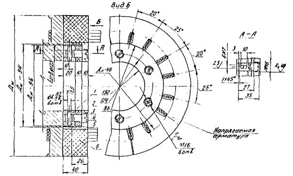
1 - внутреннее стальное кольцо; 2 - внутреннее кольцо из резины; 3 - внешнее стальное кольцо; 4 - палец; 5 - штифт (ГОСТ 3128-70); 6 - наружное кольцо из резины
Рекомендуемое
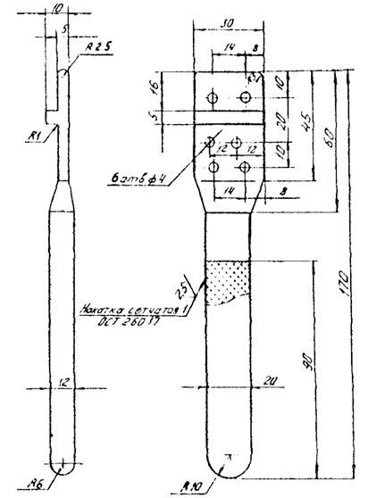
Обязательное
1. Расчет и подбор состава исходной бетонной смеси
1.1. Ориентировочную величину требуемого остаточного водоцементного отношения определяют по формуле
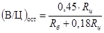
где В - содержание воды (остаточной) в 1 м3 бетона, л;
Ц - расход цемента на 1 м3 бетона, кг;
Rц - марка или активность цемента;
Rб - марка бетона при сжатии, соответствующая проектному классу.
1.2. Необходимое содержание цемента на 1 м3 бетона после центрифугирования рассчитывают по формуле:
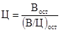
где Вост - количество остаточной воды в бетоне (после центрифугирования), принимаемое для ориентировочных расчетов равным:
150 л/м3 - при введении добавок типа ЛСТ;
135 л/м3 - при введении добавки С-3.
В последующем, в процессе изготовления опытных стоек и систематического контроля за объемом отходящего шлама, уточняют количество остаточной воды Вост для конкретных материалов и условий производства.
1.3. После определения необходимого содержания цемента в бетоне по окончании центрифугирования рассчитывают состав исходной бетонной смеси, в которой расход цемента принимают равным определенному ранее Ц. Чтобы обеспечить подвижность исходной бетонной смеси на момент начала центрифугирования в интервале 3 - 4 см осадки конуса (п. 5.1), необходимо рассчитать состав исходной смеси, имеющей сразу после приготовления подвижность 5 - 6 см О.К. (с учетом ее потери от момента приготовления смеси до начала центрифугирования). Подвижность исходной бетонной смеси в момент выхода из бетоносмесителя, обеспечивающая соблюдение п. 5.1, должна быть уточнена в зависимости от конкретных условий производства, особенностей цемента, температуры бетонной смеси и воздуха в цехе и других факторов, влияющих на потерю подвижности смеси за время технологических операций.
Ориентировочный расход воды затворения Взатв для получения исходной бетонной смеси с подвижностью 5 - 6 см О.К. принимают равным:
190 л/м3 - при введении добавки типа ЛСТ;
165 л/м3 - при введении добавки С-3.
1.4. Дальнейший расчет ведут на основе положения, что сумма абсолютных объемов составляющих материалов равна 1000 л (1 м3) плотно уложенной бетонной смеси. Рассчитывают абсолютные объемы цементного теста и смеси заполнителей, по которым определяют общее весовое содержание песка и щебня.
1.5. Абсолютный объем цементного теста Vm, л, абсолютный объем смеси заполнителей (песок + щебень) Vз, л и общий весовой расход заполнителей 3, кг, соответственно определяют по формулам:
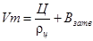 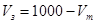 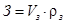
где rц - плотность цемента, кг/л;
rз - приведенная плотность смеси песка и щебня, кг/л, определенная по формуле
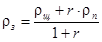
Здесь rп, rщ - соответственно плотность песка и щебня, кг/л;
r - соотношение по массе между песком и щебнем.
Весовой расход щебня Щ, кг, песка П, кг, соответственно определяют по формулам:
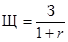 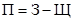
1.6. Соотношение крупной (10 - 20) мм и мелкой (5 - 10) мм фракций щебня при наличии обеих фракций в необходимом количестве выбирают экспериментальным путем (составлением смесей) по наибольшей объемной массе смеси. При дополнительном обогащении щебня перед подачей в расходные бункера бетоносмесителя (п. 2.6), соотношение фракций щебня принимают таким, которое фактически имеется в используемом заполнителе.
1.7. Оптимальное соотношение r определяют в соответствии с п. 5.2 по технологическому признаку путем изготовления опытных стоек. Для этого рассчитывают составы бетона с r, равными 0,40; 0,50 и 0,60 и выдают их на бетоносмесительный узел.
При изготовлении опытных стоек необходимо следить за тем, чтобы подвижность бетонной смеси на момент начала центрифугирования была в интервале 3 - 4 см О.К. В случае необходимости при изготовлении бетонной смеси увеличивают или уменьшают расход воды на затворение смеси, не корректируя рассчитанного состава бетона по расходу остальных материалов (цемента и заполнителей).
1.8. Опытные стойки изготавливают на составах, начиная от наибольшего r, чтобы исключить опасность изготовления дефектных конструкций. При появлении на поверхности внутренней полости стойки свободных зерен щебня, осыпающихся после окончания центрифугирования, изготовление опытных стоек на составах с дальнейшим снижением r прекращают.
Оптимальным r принимают то, при котором на поверхности внутренней полости стойки видны вкрапления зерен щебня крупной фракции, выступающих из бетона на треть своей величины с расстоянием между выступающими зернами в пределах 4 - 6 см (п. 5.2).
1.9. В процессе изготовления опытных стоек, а также при корректировках состава бетона изготавливают в навесной приставке контрольные центрифугированные кольца, которые испытывают в соответствии с п. 11.17 и 11.20. На основании испытаний центрифугированных образцов-сегментов из колец устанавливают минимальный расход цемента, обеспечивающий получение заданной передаточной прочности, и соответственно корректируют состав исходного бетона по расходу цемента (без изменения r).
2. Пример расчета и подбора состава исходной бетонной смеси
2.1. Требуется подобрать состав бетона для изготовления стоек опор контактной сети с маркой бетона 500. Материалы для бетона: цемент портландский марки 500; щебень гранитный (состоит из двух фракций 5 - 10 мм и 10 - 25 мм, дозируемых отдельно), rщ = 2,67; песок речной средней крупности rп = 2,62); в бетонную смесь вводят пластифицирующую добавку ЛСТ.
2.2. Ориентировочная величина требуемого остаточного водоцементного отношения
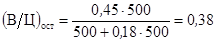
2.3. Необходимое содержание цемента на 1 м3, кг, центрифугированного бетона:
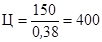
2.4. Абсолютный объем цементного теста Vm, л, в исходной бетонной смеси (при Взатв = 190 л, rц = 3,1)
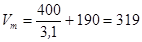
2.5. Абсолютный объем заполнителей, л:
Vз = 1000 - 319 = 681.
2.6. Приведенная плотность смеси заполнителей rз, кг/л, при среднем r = 0,5
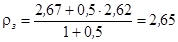
2.7. Общий весовой расход заполнителей, З, кг
З = 681×2,65 = 1805.
2.8. Весовой расход щебня и песка, кг, рассчитывают для различных значений r:
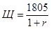
2.9. Результаты расчета состава исходной бетонной смеси (на 1000 л плотно уложенного бетона) сводят в таблицу. Для данного цемента оптимальная величина добавки ЛСТ - 0,1 % от веса цемента (см. п. 2.7).
|
Составляющие бетонной смеси |
Единицы измерения |
Расход материалов при r |
|||
|
0,3 |
0,4 |
0,5 |
0,6 |
||
|
Цемент |
кг |
400 |
400 |
400 |
400 |
|
Песок |
кг |
415 |
515 |
605 |
675 |
|
Щебень |
кг |
1390 |
1290 |
1200 |
1130 |
|
Вода |
л |
190 |
190 |
190 |
190 |
|
ЛСТ (сухое) |
кг |
0,4 |
0,4 |
0,4 |
0,4 |
2.10. Изготовление опытных стоек из исходных бетонных смесей полученных составов (начиная от r = 0,6) показало, что оптимальным составом бетона, в наибольшей степени отвечающим технологическому показателю (п. 5.2), является состав с r равным 0,40. В состав исходного бетона (r = 0,40) вводят поправки за счет изменения расхода воды для затворения (если для получения необходимой удобоукладываемости смеси изменяли количество воды затворения против принятого в расчете) и за счет уточнения приведенной плотности смеси заполнителей (при r = 0,40).
2.11. Подобранный состав бетона должен быть обязательно проверен путем изготовления и испытания контрольных центрифугированных образцов-колец для уточнения расхода цемента, который был принят в расчете ориентировочно.
Рекомендуемое
1. Порядок контроля натяжения арматуры
1.1. При натяжении проволочного пакета следует контролировать усилие натяжения, передаваемое арматуре от домкрата. Одновременно с целью предупреждения грубых ошибок измерения усилия натяжения необходимо замерять величину удлинения.
1.2. Периодически, не реже чем один раз на 200 изготовленных стоек, проверяют равномерность натяжения проволоки в пакете путем измерения натяжения каждой проволоки.
1.3. Измерение усилия следует производить с точностью ±5 %, а измерение удлинения проволочного пакета - с точностью до 1 мм.
2. Измерение усилия натяжения арматуры
2.1. Для получения достоверного результата измерения усилия натяжения необходимо обеспечить соответствие манометров по пределу измерения и классу точности измеряемому давлению масла, а также правильный монтаж манометров. Потери усилия вследствие трения в самом домкрате и в направляющих учитывают методом прямого и обратного хода домкрата.
2.2. Натяжные станции следует оборудовать манометрами класса точности 1 или 1,5.
Рекомендуется подключить к цилиндру натяжного домкрата непосредственно или при помощи промежуточной трубки параллельно два манометра. Если нет расхождений в показаниях, то это свидетельствует о правильности показаний обоих манометров.
К возвратной полости домкрата должен быть подключен манометр на 60 МПа, который служит для контроля отсутствия противодавления в процессе натяжения.
2.3. Для учета потерь от трения в процессе натяжения определяют давление Р1, регистрируемое манометром при прямом ходе поршня домкрата (при движении поршня в направлении натяжения), и давление Р2, регистрируемое манометром при начале обратного хода поршня, когда перемещение поршня в обратном направлении еще не превышают 0,5 мм.
2.4. Эффективное давление масла Рэф, МПа, определяют как среднее арифметическое значение давления при прямом и обратном ходе поршня домкрата
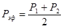
2.5. Усилие натяжения проволочного пакета N, кН, равно произведению значения эффективного давления масла Рэф, МПа, на активную площадь поршня домкрата F, см2, деленному на 10
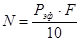
2.6. Не реже одного раза в месяц проводят поверку применяемых манометров по образцовому манометру, который устанавливают взамен одного из двух параллельно расположенных манометров.
2.7. Применяемые для измерения давления масла манометры должны периодически, в соответствии с существующим положением, проходить государственную поверку.
3. Измерение величины удлинения проволочного пакета при натяжении
3.1. Величину удлинения измеряют по величине перемещения поршня натяжного домкрата. После выбора слабины проволочного пакета отмечают меткой положение поршня относительно неподвижной точки на домкрате.
3.2. Проволочный пакет натягивают до контролируемой величины и вторично замеряют расстояние между меткой и неподвижной точкой.
3.3. По разности расстояний определяют величину перемещения поршня, которая равна удлинению (вытяжке) арматуры. Величину перемещения измеряют стальной линейкой.
4. Проверка равномерности натяжения проволок в пакете
4.1. Усилие натяжения каждой проволоки в пакете измеряют для оценки равномерности усилия по сечению стойки и проверки надежности стыков.
4.2. Измерения усилия натяжения каждой проволоки могут быть выполнены проволочным прибором ПРДУ с базой измерения не менее 600 мм (в соответствии с ГОСТ 22362-77).
4.3. Проверку и тарировку прибора ПРДУ и измерение им усилий натяжения проволок в пакете следует выполнять в соответствии с указаниями по эксплуатации прибора, прилагаемыми заводом-изготовителем, и ГОСТ 22362-77.
4.4. В процессе измерения усилий в проволоке пакета необходимо поддерживать строго одинаковое давление масла в натяжном домкрате. Измерения проводят после намотки спиральной арматуры при проектном усилии натяжения.
4.5. Равномерность натяжения считается удовлетворительной, если измеренное усилие в стыкованной ветви находится в пределах величины усилий наиболее и наименее натянутой нестыкованной проволоки данного пакета. Наличие большого разброса свидетельствует о неправильном изготовлении проволочных пакетов, что влечет за собой их обрыв или искривление стоек.
Обязательное
1. Общие положения
1.1. Методика предполагает изготовление центрифугированных образцов-колец в навесных приставках конструкции СКБ Главстройпрома; пример конструкции приставки для стоек контактной сети дан на рисунке. При использовании приставок другой конструкции методика должна быть соответственно откорректирована. Количество одновременно изготавливаемых в приставке колец может быть от 1 до 3.
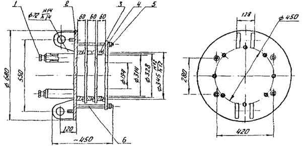
Приставка для изготовления центрифугированных образцов колец:
1 - винт упорный; 2 - корпус; 3 - разделительный фланец; 4 - кольцо; 5 - крышка; 6 - стяжной болт
1.2. Приставка должна обеспечивать изготовление и свободное извлечение каждого центрифугированного кольца. Внешний диаметр кольца должен соответствовать наиболее нагруженному сечению стойки, толщина кольца - толщине стенки стойки, высота кольца для всех стоек - 60 мм.
1.3. Конструкция крепления приставки к комлевому оголовку формы должна обеспечивать жесткое соединение несущего фланца приставки с фланцем оголовка при соблюдении обязательного условия - геометрические оси оголовка и приставки должны находиться на одной линии и совпадать с осью вращения формы.
1.4. Все элементы навесных приставок должны быть изготовлены с соблюдением требований к точности размеров и качеству поверхности в соответствии с ГОСТ 22685-77.
1.5. При возникновении дополнительных колебаний формы с навесной приставкой во время центрифугирования должны быть выявлены и устранены причины, вызвавшие дисбалансность комлевого оголовка с приставкой.
2. Изготовление контрольных центрифугированных образцов-колец
2.2. Собранную и смазанную консистентной смазкой (типа солидола) приставку навешивают на комлевой оголовок на натяжном стенде после передачи усилия натяжения арматуры на форму и подачи коромысла упора стенда в крайнее заднее положение, проверяют надежность всех соединительных узлов и форму с приставкой передают на центрифугу.
2.3. После укладки формы с приставкой на центрифугу и надвижки шлакосборника через проем в шламосборнике в процессе вращения формы на первой скорости в приставку вручную с помощью совка или кельмы забрасывают бетонную смесь, отобранную по п. 2.1. Признаком достаточности поданного количества бетонной смеси является исчезновение следов кольцевых фланцев по краям внутренней поверхности центрифугируемых колец. При проявлении следов колец необходимое количество бетонной смеси может быть добавлено и на переходных скоростях.
2.4. При подборах состава исходного бетона в приставку загружают бетонную смесь подобранного состава и приготовленную вручную в лабораторном или производственном бетоносмесителе.
2.5. После окончания центрифугирования форму вместе с приставкой и изготовленными в ней контрольными кольцами передают на термообработку по установленному режиму. При необходимости после окончания центрифугирования приставка с контрольными кольцами может быть снята с оголовка формы до передачи ее на термообработку.
3. Испытание центрифугированных образцов-колец
3.2. Предел прочности центрифугированного бетона при сжатии определяют путем испытания сегментных частей кольца. Три части от каждого кольца испытывают сразу после термообработки для определения передаточной прочности бетона и три - в возрасте 28 сут последующего хранения в камере нормального твердения.
3.3. При испытании нагрузку на бетон передают через стальные пластины - прокладки размером 60´100 мм и толщиной 20 мм, устанавливаемые в радиальном направлении по отношению к сегменту. Качество поверхности и твердость стали прокладок должны соответствовать ГОСТ 310.4-81, п. 1.10.
Предел прочности при сжатии центрифугированного бетона определяют по формуле
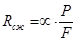
где 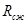
- масштабный коэффициент, равный 0,835 для приведения прочности к эталонному образцу размером 150´150´150 мм;
P - разрушающая нагрузка, кН (кгс);
F - площадь сжатия бетона под пластиной, м2 (равна толщине кольца, умноженной на ширину пластины).
3.4. Прозвучивание центрифугированных колец при неразрушающем контроле прочности производят путем установки датчиков по наружной поверхности не менее чем в трех позициях по периметру. Определение отскока или пластической деформации производят не менее чем в трех точках по наружной поверхности бетона кольца, но со смещением относительно мест прозвучивания. Неразрушающие испытания бетона каждого кольца производят до его раскола - по п. 3.1.
3.5. При испытаниях центрифугированного бетона за серию принимают совокупность всех результатов, полученных при испытаниях образцов-колец и сегментных частей из образцов-колец, изготовленных одновременно в одной приставке.
Прочность бетона в серии определяют как среднеарифметическое из результатов всех испытаний данного способа (механического или неразрушающего).
4. Неразрушающий контроль прочности бетона центрифугированных стоек
4.1. Контроль прочности центрифугированного бетона в стойках неразрушающими методами (по отскоку, или пластической деформации, или по скорости прохождения ультразвука) осуществляют не менее чем в двух стойках по длине стойки: в месте максимального изгибающего момента и на уровне условной заделки.
4.2. Определение отскока или пластической деформации производят не менее чем в трех точках по наружной поверхности бетона в каждом сечении стойки. Прозвучивание центрифугированного бетона производят путем установки датчиков по наружной поверхности не менее чем в трех позициях по периметру сечения, но со смещением относительно мест определения отскока или пластических деформаций.
4.3. За показатель прочности центрифугированного бетона в контролируемой стойке принимают наименьшее среднеарифметическое его значение в одном из сечений.
4.4. Построение градуировочных зависимостей "прочность - отскок или пластическая деформация" и "прочность - время прохождения ультразвука" осуществляют в соответствии с ГОСТ 22690.0-77 - ГОСТ 22690.2-77 и ГОСТ 17624-87 на основании результатов испытаний центрифугированных образцов-колец, изготовленных в приставке. После определения отскока (пластических деформаций) и скорости прохождения ультразвука кольца раскалывают и полученные сегменты испытывают на сжатие в соответствии с разд. 3 настоящего приложения.
4.5. Градуировочные зависимости устанавливают заново при изменении вида цемента, заполнителей и добавки, состава исходного бетона по расходу цемента (более 20 %) и изменении технологии производства конструкций, но не реже двух раз в год.
Справочное
1. ГОСТ 25781-83*. Формы стальные для изготовления железобетонных изделий. Технические условия.
2. ГОСТ 19330-81*. Стойки железобетонные для опор контактной сети железных дорог. Технические условия.
3. ГОСТ 22131-76. Опоры железобетонные высоковольтные сигнальных линий автоблокировки железных дорог. Технические условия.
4. ГОСТ 10178-85. Портландцемент и шлакопортландцемент. Технические условия.
5. ГОСТ 22266-76*. Цементы сульфатостойкие. Технические условия.
6. ГОСТ 8267-82. Щебень из природного камня для строительных работ. Технические условия.
7. ГОСТ 10260-82. Щебень из гравия для строительных работ. Технические условия.
8. ГОСТ 10268-80*. Бетон тяжелый. Технические требования к заполнителям.
9. ГОСТ 8736-85. Песок для строительных работ. Технические условия.
10. ГОСТ 23732-79. Вода для бетонов и растворов. Технические условия.
11. ГОСТ 10922-75. Арматурные изделия и закладные детали сварные для железобетонных конструкций. Технические требования и методы испытаний.
12. ГОСТ 3282-74*. Проволока стальная низкоуглеродистая общего назначения. Технические условия.
13. ГОСТ 10181.1-86. Смеси бетонные. Методы определения удобоукладываемости.
14. ГОСТ 10181.3-86. Смеси бетонные. Методы определения пористости.
15. ГОСТ 2700-86. Бетоны. Правила подбора состава.
16. ГОСТ 7473-85. Смеси бетонные. Технические условия.
17. ГОСТ 3103-76. Цементы. Методы определения нормальной густоты, сроков схватывания и равномерности изменения объема.
18. ГОСТ 24297-87*. Входной контроль продукции.
19. ГОСТ 8735-88. Песок для строительных работ. Методы испытаний.
20. ГОСТ 8269-87. Щебень из природного камня, гравий и щебень из гравия для строительных работ. Методы испытаний.
21. ГОСТ 310.4-81. Цементы. Методы определения пределов прочности при изгибе и сжатии.
22. ГОСТ 22236-85. Цементы. Правила приемки.
23. ГОСТ 12004-81*. Сталь арматурная. Методы испытания на растяжение.
24. ГОСТ 14019-80. Металлы и сплавы. Методы испытаний на изгиб.
25. ГОСТ 1579-80*. Проволока. Метод испытания на перегиб.
26. ГОСТ 22362-77. Конструкции железобетонные. Методы измерения силы натяжения арматуры.
27. ГОСТ 17624-87. Бетоны. Ультразвуковой метод определения прочности.
28. ГОСТ 22690-77, ГОСТ 22690-88. Бетоны. Определение прочности механическими методами неразрушающего контроля.
29. ГОСТ 18105-86*. Бетоны. Правила контроля прочности.
30. ГОСТ 10060-86. Бетоны. Методы контроля морозостойкости.
31. ГОСТ 10180-78*. Бетоны. Методы определения прочности на сжатие и растяжение.
32. ГОСТ 12730.5-84. Бетоны. Методы определения водонепроницаемости.
33. ГОСТ 22904-78. Конструкции железобетонные. Магнитный метод определения толщины защитного слоя бетона и расположения арматуры.
34. ГОСТ 13015.0-83. Конструкции и изделия бетонные и железобетонные сборные. Общие технические требования.
35. ГОСТ 8829-85. Конструкции и изделия бетонные и железобетонные. Методы и испытания нагружением и оценка прочности, жесткости и трещиностойкости.
36. ГОСТ 26633-85. Бетон тяжелый. Технические условия.
СОДЕРЖАНИЕ